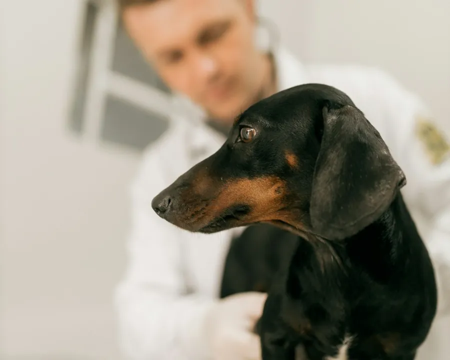
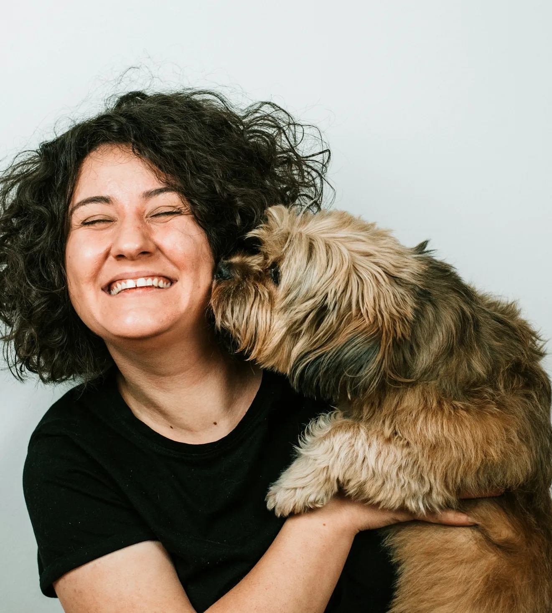
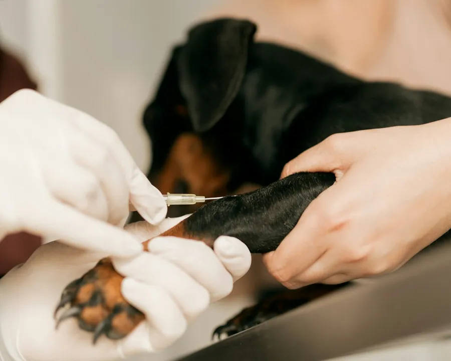
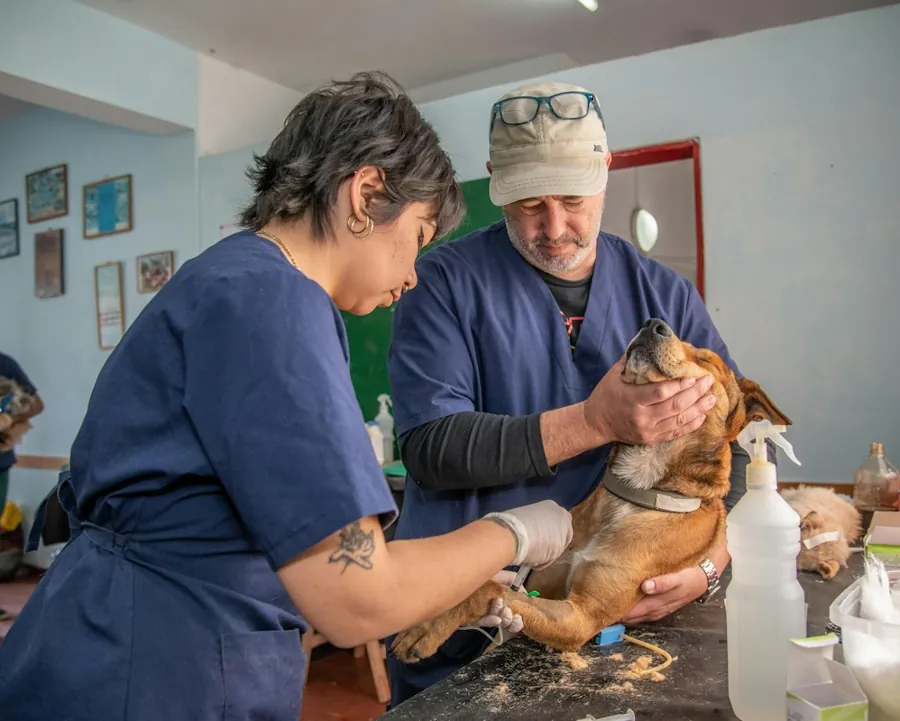
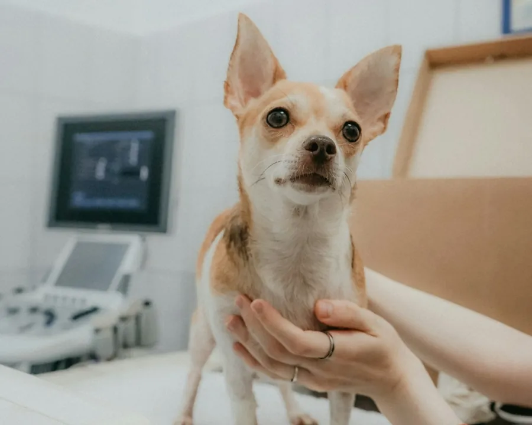
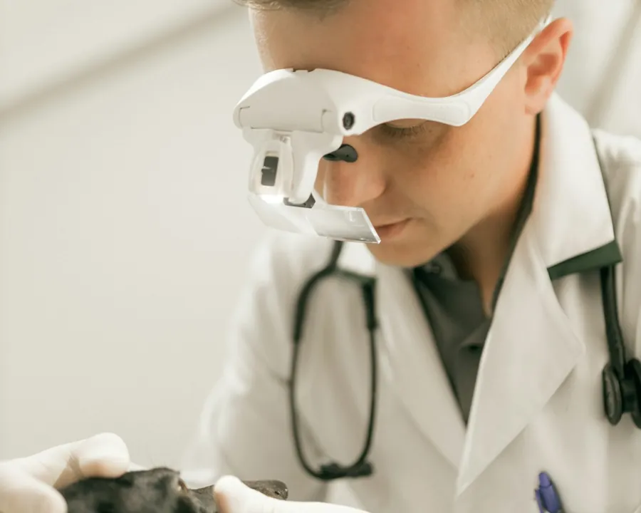
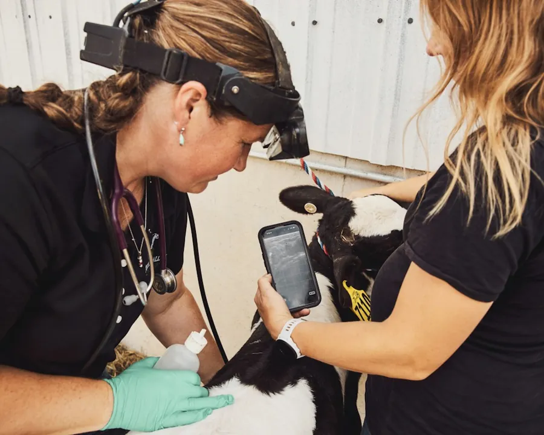
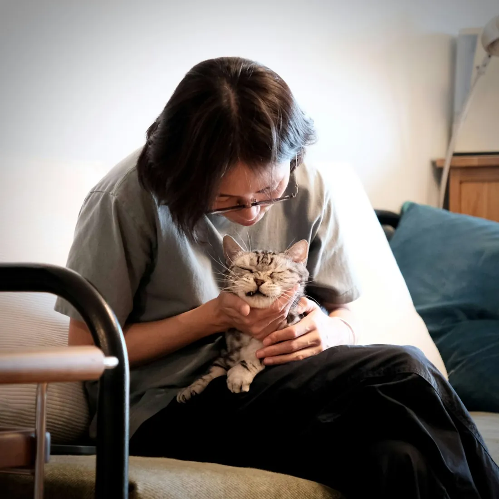
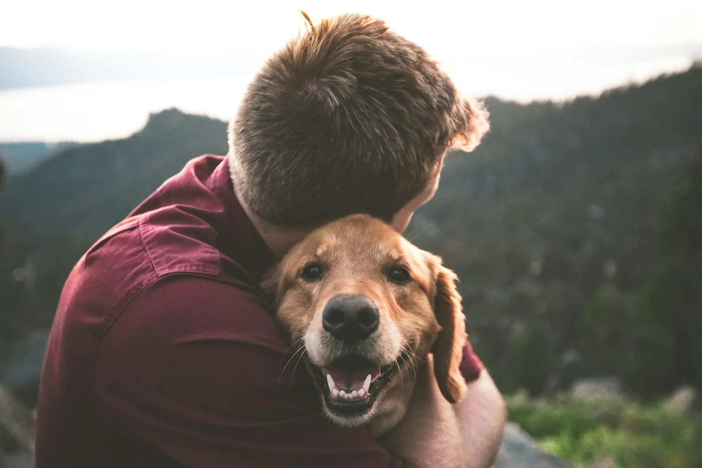

Приём и консультация
Осмотр, диагноз и понятный план лечения. Объясним, что делать дома.
Кошки, собаки, грызуны, птицы и экзотические животные. Приём, операции, рентген и выезд врача на дом.

Стоимость зависит от животного и случая. Точную цену назовём по телефону.

Осмотр, диагноз и понятный план лечения. Объясним, что делать дома.

Вакцинация, дегельминтизация, обработка от блох и клещей.

Кастрация, стерилизация, остеосинтез при переломах, сложные операции.

Снимок и кардиограмма в клинике, своя лаборатория.

Чистка зубов от камня, лечение и удаление.

Принимаем не только кошек и собак: КРС, птиц, грызунов и экзотических.
Нужна санитарная стрижка, чистка желёз или гуманная эвтаназия? Тоже делаем, позвоните.

Когда питомец старый, после операции или просто боится переноски. Не нужно никуда везти: врач осмотрит питомца дома.
Работаем с этого года на Одоевском шоссе.
Принимаем каждый день с 10 до 20, без выходных.
Берёмся за сложные операции, за которые в Туле берутся не везде.
Обмениваемся опытом с ведущими ветклиниками столицы.

Подскажем, срочно это или можно подождать, и запишем на удобное время.